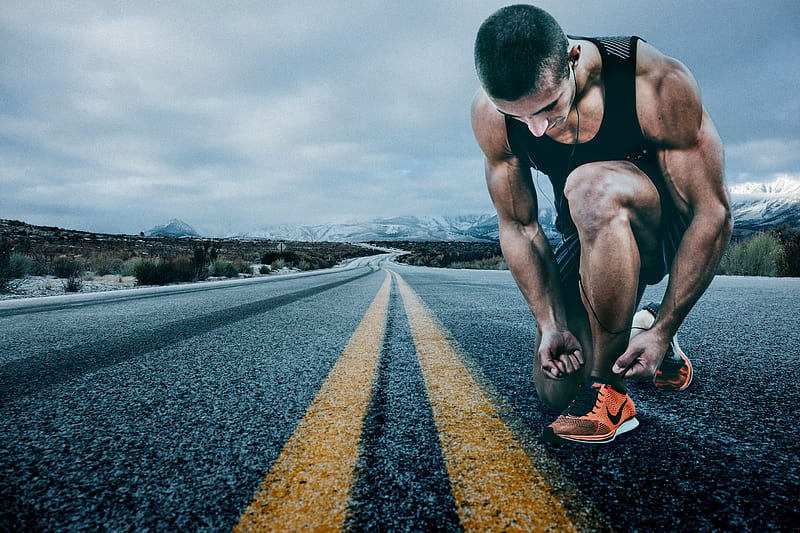
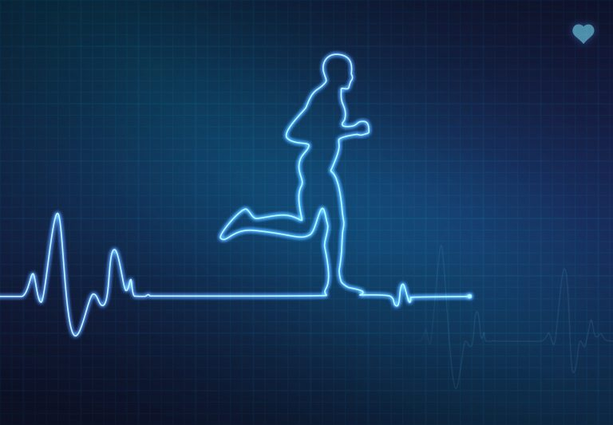

By Vithanh, Sep 10, 2024
Att börja springa kan kännas som en stor utmaning, men det är också en av de mest belönande aktiviteterna du kan ge dig själv. Löpning erbjuder en enkel väg till förbättrad kondition, ökad energi och en bättre mental hälsa. Här är en nybörjarguide som hjälper dig att ta de första stegen på din löparresa.
Sätt upp realistiska mål
Det första steget mot att bli löpare är att sätta upp mål. Fråga dig själv varför du vill börja springa. Är det för att förbättra din hälsa, gå ner i vikt eller kanske för att delta i ett lopp? Att ha tydliga mål ger dig motivation och en riktning att följa. Börja med små och uppnåeliga mål, som att springa i 10 minuter utan att stanna. Ju mer du når dina mål, desto mer kommer din självsäkerhet att växa.
Välj rätt utrustning
En annan viktig del av att komma igång med löpning är att investera i rätt utrustning. Ditt första steg är att skaffa ett par bra löparskor. Besök en specialiserad sportbutik där personalen kan hjälpa dig att hitta skor som passar din fottyp och löpstil. Det kan göra stor skillnad för din komfort och minska risken för skador. När det gäller kläder, välj funktionella material som transporterar bort svett och håller dig bekväm under hela passet. Undvik bomull eftersom det kan bli tungt när det blir blött.
Börja långsamt
Som nybörjare är det viktigt att du börjar i din egen takt. Många börjar med att kombinera gång och löpning. Till exempel kan du gå i 4 minuter och sedan springa i 1 minut. Detta tillvägagångssätt gör det lättare att bygga upp uthållighet utan att överanstränga dig. Efterhand kan du gradvis öka tiden du springer och minska gångintervallen. Sträva efter att träna 3-4 gånger i veckan för att skapa en stabil grund.
Uppvärmning och nedvarvning
Innan varje löppass är det viktigt att värma upp. En uppvärmning på 5-10 minuter med lätt jogging eller dynamiska sträckor förbereder musklerna och minskar skaderisken. Efter löpningen bör du också nedvara. Ta en lugn promenad och gör några statiska sträckor för att främja återhämtning och öka rörligheten.
Hitta din motivation
Motivation kan vara en utmaning för nybörjare. Hitta en löparvän eller gå med i en lokal löpargrupp för att dela erfarenheter och få stöd. Du kan också sätta upp belöningar för att fira dina framsteg, som en ny löpoutfit eller en massage. Att variera dina rutter och lyssna på musik eller podcasts kan också göra träningen mer underhållande.
Lyssna på din kropp
Det är viktigt att lyssna på kroppens signaler under din löpning. Känn efter hur du mår både under och efter passet. Om du upplever smärta eller obehag, ta en paus och ge dig själv tid att återhämta dig. Det är bättre att ta det lugnt och undvika skador än att pressa sig för hårt.
Avslutande tankar
Löpning är en personlig resa och det viktigaste är att ha kul och njuta av processen. Ge dig själv tid att växa som löpare för snart kommer du att upptäcka hur belönande och uppfriskande löpning kan vara. Så snöra på dig skorna och ge dig ut på din första runda – ett nytt kapitel i ditt liv väntar!